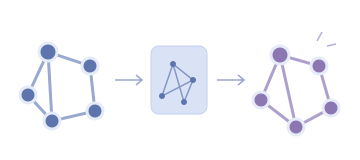
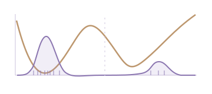

Geometric molecular modeling
E(3)-equivariant representations and generative models for 3D molecular reconstruction, editing, and discovery.
TSINGHUA UNIVERSITY · COMPUTER SCIENCE
Geometric models for molecular discovery.
Self-improving systems for AI.
Undergraduate researcher, Department of Computer Science and Technology
Tsinghua University · Beijing, China
ABOUT
I am an undergraduate in the Department of Computer Science and Technology at Tsinghua University. My research interests are in AI for Science and LLM agents, particularly geometric molecular generative modeling, molecular identification, Boltzmann generation, and self-improving agent systems.
I am currently a research intern in the Coley Lab at MIT, working on molecular identification from multi-stage tandem mass spectrometry. Previously, I visited the Ma Lab at Carnegie Mellon University and worked at Tsinghua AIR and Sapient Intelligence.
E(3)-equivariant representations and generative models for 3D molecular reconstruction, editing, and discovery.
Learning from MSn fragmentation patterns, modeling Boltzmann distributions, and estimating free energies.
Rigorous assessment of AI systems that develop ML methods, with an emphasis on generalization across settings and scales.
Recent highlights
2026MolAlign3D at ICML · MLS-Bench at NeurIPS
2026SEAL-BG and MolGAN under review
2025Fixed-dimensional equivariant molecular representations at NeurIPS
SELECTED PROJECTS
Selected work on molecular representations, geometric generation, and statistical mechanics.

Representation → reconstruction & editingHow can a compact geometric representation also capture molecular meaning?
MolAlign3D anchors a fixed-dimensional E(3)-equivariant latent space with pretrained molecular semantics, connecting 3D reconstruction, property prediction, and zero-shot editing.
I proposed the framework, implemented the full pipeline, conducted all experiments, and drafted the majority of the manuscript.
This builds on my earlier work on fixed-dimensional equivariant molecular autoencoders, which supported molecular sampling, interpolation, and variable-atom editing.

Energy landscape → molecular ensemblesHow can geometric generative models support tractable likelihoods and free-energy estimation?
SEAL-BG combines SE(3)-equivariant geometric perception with local-coordinate densities for scalable Boltzmann generation.
I developed SEAL-BG during my visit to the Ma Lab at Carnegie Mellon University, as part of research on tractable-likelihood models for Boltzmann distributions and free-energy calculations.
WRITING & PUBLICATIONS
* Equal contribution. † Corresponding author.
Under review
Equivariant geometric perception and local-coordinate density modeling for scalable Boltzmann generation and free-energy estimation.
Under review
Few-step 3D molecule generation through hierarchical reasoning.
NeurIPS 2026
A benchmark with 140 tasks across 12 domains, evaluating whether AI systems can invent ML methods whose improvements generalize across controlled settings and scales.
ICML 2026
Aligning molecular semantics with geometric latent representations for reconstruction, property prediction, and zero-shot editing.
NeurIPS 2025
A fixed-dimensional E(3)-equivariant autoencoder enabling sampling, interpolation, and flexible editing of 3D molecules with variable atom counts.
RESEARCH JOURNEY
Research Intern · Coley Lab
Machine learning for small-molecule fingerprint identification from MSn data, supporting molecular structure elucidation and compound identification.
Visiting Student · Ma Lab
Tractable-likelihood generative models for Boltzmann distributions. Developed SEAL-BG for scalable Boltzmann generation and free-energy estimation.
Related project SEAL-BG
Research Intern
Proposed MolAlign3D, implemented the full pipeline, and conducted all experiments for unified semantic-generative 3D molecular modeling.
Research Intern
Applied hierarchical reasoning models to binding affinity prediction and structure-based drug design.
Research Intern
Developed a 3D molecular autoencoder with an E(3)-equivariant fixed-dimensional latent space; led data curation and implemented key model modules.
BACKGROUND
Undergraduate, Department of Computer Science and Technology
GPA: 3.9 / 4.0 · Rank: 8 / 172
Machine learning · Python · PyTorch · Software development
Chinese (native) · English (proficient)
RECOGNITION
COMMUNITY & LIFE
I enjoy bringing people together around science, technology, and learning.
Help organize university-wide programs including the Science Camp and Liaoyuan Forum.
Led the Network Department, coordinating events, technical workshops, and external communications.
Organized peer-support programs and academic sharing sessions.
GET IN TOUCH
My interests span molecular generative modeling, AI for Science, and self-improving agents.